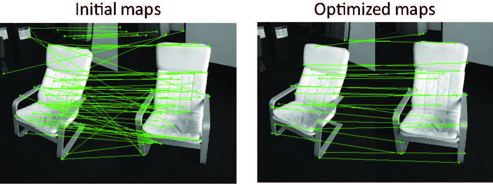
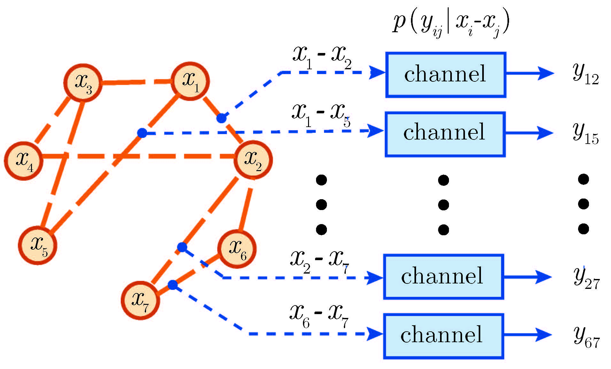

Research
My research centers around various aspects of information science (broadly defined), including:
High-dimensional Structured Estimation (e.g. Compressed Sensing, Matrix Completion, Phase Retrieval)
Convex and Nonconvex Optimization
Statistical Inference and Learning
Information Theory and Wireless Communications
Network Algorithms (e.g. Gossip Algorithms, Network Coding, Scheduling)
I am particularly fascinated by the theory that is inspired by and can inform practical applications.
Solving random quadratic systems of equations in linear time
 |
The problem of solving quadratic equations has many applications ranging from combinatorial optimization to the famous phase retrieval problem. We demonstrate that one can solve unstructured quadratic systems in variables from
|
 equations in linear time. This is achieved by minimizing a non-convex objective with novel update rules, which operate in an adaptive fashion and drop terms bearing too much influence on the search direction. Empirically, the computational cost of our algorithm is about four times that of solving a least-squares problem of the same size.
equations in linear time. This is achieved by minimizing a non-convex objective with novel update rules, which operate in an adaptive fashion and drop terms bearing too much influence on the search direction. Empirically, the computational cost of our algorithm is about four times that of solving a least-squares problem of the same size.Joint graph matching via convex relaxation
|  | We are often given data collections that comprise many, often partial, viewsimagesshapes of the same physical object. In order to combine information from them, a central task entails finding shared features across all images. We proposed a parameter-free convex procedure, called MatchLift, to aggregate a set of initial pairwise estimates (computed in isolation) into a compatible map collection. The algorithm provably exhibits near-optimal matching performance, as corroborated on various benchmark datasets including synthetic and real-world examples.
|
Regularizing spectral sparsity via structured matrix completion
A broad family of applications features signals that can be approximated by a superposition of spectral spikes and involves estimation of signals from incomplete time samples. Recent advances in compressed sensing (CS) enables dramatic reduction of sample complexity, provided that one can appropriately exploit signal sparsity. Nevertheless, the success of CS relies on parsimonious representation of the solution in a discrete dictionary, while in various applications the parameters never fall on this discrete basis. We developed a near-optimal nonparametric convex program, which promotes sparsity while enforcing constraints consistent with the physics of the problem. The key is to recognize that both structural constraints can be translated into a low-rank Hankel structure.
|
Information recovery from pairwise measurements
|  | In many scenarios, one wishes to infer information about a large collection of variables, but it is infeasible to directly measure each individual variable in isolation. Instead, only certain pairwise relations are observable. Problems of this kind have received considerable attention across multiple domains. Despite their intrinsic connections, most of these problems were studied on a case-by-case basis. Our work emphasizes the similarities among this family of problems, by viewing them as a graph-based functional fed into a set of general channels, much like Shannon's approach for communications. Employing information-theoretic techniques, we developed a unified framework to characterize the fundamental recovery criterion, which accommodates general measurement patterns.
|